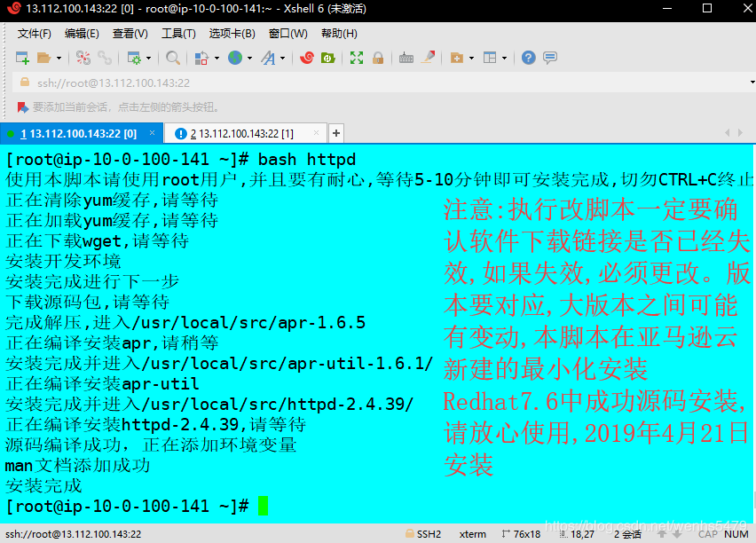
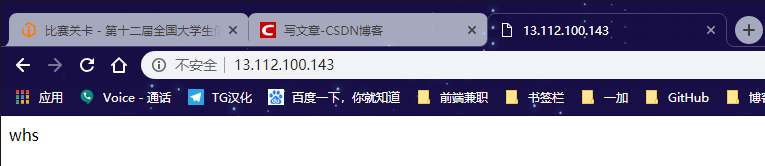
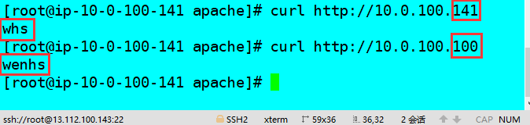
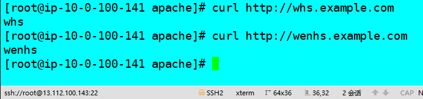
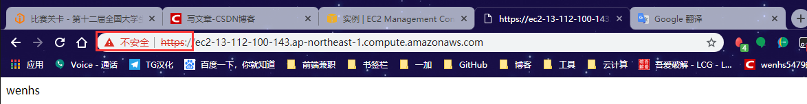

httpd

文章目录
1. httpd简介
httpd是Apache的超文本传输协议（HTTP）服务器的主程序。被设计为一个独立运行的后台进程，它会建立一个处理请求的子进程或线程的池。
通常，httpd的不应该被直接调用，而应该在类Unix的系统中由的apachectl调用，在Windows中作为服务运行。
2. httpd版本
本文主要介绍的httpd的两大版本，httpd-2.2和httpd-2.4。
- CentOS6系列的版本默认提供的是的httpd-2.2版本的rpm包
- CentOS7系列的版本默认提供的是的httpd-2.4版本的rpm包
2.1 httpd的特性
httpd的有很多特性，下面就分别来说说的httpd-2.2版本和的httpd-2.4版本各自的特性。
httpd-2.2的特性
- 事先创建进程
- 按需维持适当的进程
- 模块化设计，核心比较小，各种功能通过模块添加（包括PHP），支持运行时配置，支持单独编译模块
- 支持多种方式的虚拟主机配置，如基于ip的虚拟主机，基于端口的虚拟主机，基于域名的虚拟主机等
- 支持https协议（通过mod_ssl模块实现）
- 支持用户认证
- 支持基于IP或域名的ACL访问控制机制
- 支持每目录的访问控制（用户访问默认主页时不需要提供用户名和密码，但是用户访问某特定目录时 需要提供用户名和密码）
- 支持URL重写
- 支持MPM（Multi Path Modules，多处理模块）。用于定义httpd的工作模型（单进程、单进程多线程、多进程、多进程单线程、多进程多线程）
httpd-2.4的新特性：
- MPM支持运行DSO机制（Dynamic Share Object，模块的动态装/卸载机制），以模块形式按需加载
- 支持event MPM，eventMPM模块生产环境可用
- 支持异步读写
- 支持每个模块及每个目录分别使用各自的日志级别
- 每个请求相关的专业配置，使用
来配置 - 增强版的表达式分析器
- 支持毫秒级的keepalive timeout
- 基于FQDN的虚拟主机不再需要NameVirtualHost指令
- 支持用户自定义变量
- 支持新的指令（AllowOverrideList）
- 降低对内存的消耗
| 工作模型 | 工作方式 |
|---|---|
| prefork | 多进程模型，预先生成进程，请求一个用一个进程响应,一个主进程负责生成Ñ个子进程，进程子也。称为工作进程,每个子进程处理一个用户请求，即使没有用户请求，也会预先生成多个空闲进程，随时等待请求到达，最大不会超过1024个 |
| worker | 基于线程工作，一个请求用一个线程响应（启动多个进程，每个进程生成多个线程） |
| event | 基于事件的驱动，一个进程处理多个请求 |
2.2 httpd-2.4新增的模块
httpd-2.4在之前的版本基础上新增了几大模块，下面就几个常用的来介绍一下。
| 模块 | 功能 |
|---|---|
| mod_proxy_fcgi | 反向代理时支持的Apache服务器后端协议的模块 |
| mod_ratelimit | 提供速率限制功能的模块 |
| mod_remoteip | 基于ip的访问控制机制被改变，不再支持使用Order，Deny，Allow来做基于IP的访问控制 |
3. httpd基础
3.1 httpd自带的工具程序
| 工具 | 功能 |
|---|---|
| htpasswd | basic认证基于文件实现时，用到的帐号密码生成工具 |
| apachectl | httpd自带的服务控制脚本，支持start，stop，restart |
| apxs | 由httpd-devel包提供的，扩展httpd使用第三方模块的工具 |
| rotatelogs | 日志滚动工具 |
| suexec | 访问某些有特殊权限配置的资源时，临时切换至指定用户运行的工具 |
| ab | apache benchmark，httpd的压力测试工具 |
3.2 rpm包安装的httpd程序环境
| 文件/目录 | 对应的功能 |
|---|---|
| /var/log/httpd/access.log | 访问日志 |
| /var/log/httpd/error_log | 错误日志 |
| /var/www/html/ | 站点文档目录 |
| /usr/lib64/httpd/modules/ | 模块文件路径 |
| /etc/httpd/conf/httpd.conf | 主配置文件 |
| /etc/httpd/conf.modules.d/*.conf | 模块配置文件 |
| /etc/httpd/conf.d/*.conf | 辅助配置文件 |
mpm：以DSO机制提供，配置文件为/etc/httpd/conf.modules.d/00-mpm.conf
3.3 web相关的命令
3.3.1 curl命令
curl是基于URL语法在命令行方式下工作的文件传输工具，它支持FTP，FTPS，HTTP，HTTPS，GOPHER，TELNET，DICT，FILE及LDAP等协议。
curl支持以下功能：
- https认证
- http的POST/PUT等方法
- ftp上传
- kerberos认证
- http上传
- 代理服务器
- cookies
- 用户名/密码认证
- 下载文件断点续传
- socks5代理服务器
- 通过http代理服务器上传文件到ftp服务器
1 2 3 4 5 6 7 8 9 10 11 12 13 14 15 |
//语法：curl [options] [URL ...]
//常用的options：
-A/--user-agent <string> //设置用户代理发送给服务器
-basic //使用Http基本认证
--tcp-nodelay //使用TCP_NODELAY选项
-e/--referer <URL> //来源网址
--cacert <file> //CA证书（SSL）
--compressed //要求返回时压缩的格式
-H/--header <line> //自定义请求首部信息传递给服务器
-I/--head //只显示响应报文首部信息
--limit-rate <rate> //设置传输速度
-u/--user <user[:password]> //设置服务器的用户和密码
-0/--http1 //使用http 1.0版本，默认使用1.1版本。这个选项是数字0而不是字母o
-o/--output //把输出写到文件中
-#/--progress-bar //进度条显示当前的传送状态 |
3.3.2 httpd命令
1 2 3 4 5 6 7 8 9 10 11 |
//语法：httpd [options]
//常用的options：
-l //查看静态编译的模块，列出核心中编译了哪些模块。 \
//它不会列出使用LoadModule指令动态加载的模块
-M //输出一个已经启用的模块列表，包括静态编译在服务 \
//器中的模块和作为DSO动态加载的模块
-v //显示httpd的版本，然后退出
-V //显示httpd和apr/apr-util的版本和编译参数，然后退出
-X //以调试模式运行httpd。仅启动一个工作进程，并且 \
//服务器不与控制台脱离
-t //检查配置文件是否有语法错误 |
4.编译安装http-2.4
1 2 3 4 5 6 7 8 9 10 11 12 13 14 15 16 17 18 19 20 21 22 23 24 25 26 27 28 29 30 31 32 33 34 35 36 37 38 39 40 41 42 43 44 45 46 47 48 49 50 51 52 53 54 55 56 57 58 59 60 61 62 63 64 65 66 67 68 69 70 71 72 73 74 75 76 77 78 79 80 81 82 83 84 85 86 87 88 89 90 91 92 93 94 95 96 97 98 99 100 101 102 103 104 105 106 107 108 109 110 111 |
#!/bin/bash ##配置yum源： echo "使用本脚本请使用root用户,并且要有耐心,等待5-10分钟即可安装完成,切勿CTRL+C终止" yum -y install wget &> /dev/null if [ $? -ne 0 ];then ls -l /etc/yum.repos.d/7centos_base.repo &>/dev/null if [ $? -ne 0 ];then echo "正在下载yum源" curl -o /etc/yum.repos.d/7centos_base.repo http://mirrors.aliyun.com/repo/Centos-7.repo &>/dev/null sed -i 's/$releasever/7/g' /etc/yum.repos.d/7centos_base.repo &>/dev/null else mv /etc/yum.repos.d/7centos_base.repo /etc/yum.repos.d/7centos_base.repo_backup echo "正在备份yum源并重新下载，请重新运行脚本" exit fi fi yum clean all &>/dev/null echo "正在清除yum缓存,请等待" echo "正在加载yum缓存,请等待" yum makecache &>/dev/null ##下载wget echo "正在下载wget,请等待 " yum -y install wget &>/dev/null ##准备make环境 echo "安装开发环境" yum -y groups mark install "Development Tools" &>/dev/null #安装make gcc gcc-c++ gzip bzip2 openssl-devel pcre-devel expat-devel libtool yum -y install make gcc gcc-c++ gzip bzip2 openssl-devel pcre-devel expat-devel libtool &>/dev/null echo "安装完成进行下一步" ##下载httpd源码包 mkdir /usr/local/src &> /dev/src cd /usr/local/src echo "下载源码包,请等待" wget http://mirrors.tuna.tsinghua.edu.cn/apache//httpd/httpd-2.4.39.tar.bz2 &>/dev/null wget http://mirror.bit.edu.cn/apache//apr/apr-1.6.5.tar.bz2 &>/dev/null wget http://mirror.bit.edu.cn/apache//apr/apr-util-1.6.1.tar.bz2 &>/dev/null ##解压源码包 tar xf apr-1.6.5.tar.bz2 tar xf apr-util-1.6.1.tar.bz2 tar xf httpd-2.4.39.tar.bz2 echo "完成解压,进入/usr/local/src/apr-1.6.5" ##源码安装apr cd /usr/local/src/apr-1.6.5 echo "正在编译安装apr,请稍等" sed -i 's/$RM "$cfgfile"/#$RM "$cfgfile"/g' configure ./configure --prefix=/usr/local/apr &>/dev/null if [ $? -ne 0 ];then echo "apr ./configure定制组件失败，请自行排错" exit fi make &>/dev/null if [ $? -ne 0 ];then echo "apr make编译失败，请自行排错" exit fi make install &> /dev/null echo "安装完成并进入/usr/local/src/apr-util-1.6.1/" ##源码安装apr-util cd /usr/local/src/apr-util-1.6.1/ echo "正在编译安装apr-util" ./configure --prefix=/usr/local/apr-util --with-apr=/usr/local/apr &>/dev/null if [ $? -ne 0 ];then echo "apr-util ./configure定制组件失败，请自行排错" exit fi make &>/dev/null if [ $? -ne 0 ];then echo "apr-util make编译失败，请自行排错" exit fi make install &>/dev/null echo "安装完成并进入/usr/local/src/httpd-2.4.39/" ##源码安装httpd cd /usr/local/src/httpd-2.4.39/ echo "正在编译安装httpd-2.4.39,请等待" ./configure --prefix=/usr/local/apache --with-apr=/usr/local/apr --with-apr-util=/usr/local/apr-util/ &>/dev/null if [ $? -ne 0 ];then echo "httpd ./configure定制组件失败，请自行排错" exit fi make &>/dev/null if [ $? -ne 0 ];then echo "httpd make编译失败，请自行排错" exit fi make install &>/dev/null echo "源码编译成功，正在添加环境变量" ##添加man文档 echo "MANDATORY_MANPATH /usr/local/apache/man" >> /etc/man_db.conf man httpd &>/dev/null if [ $? -eq 0 ];then echo "man文档添加成功" else echo "man文档添加失败,如有需要，请自行添加" exit fi ##编辑httpd配置文件 sed -i '/ServerName www.example.com:80/aServerName localhost:80' /usr/local/apache/conf/httpd.conf systemctl stop firewalld &> /dev/null systemctl disable firewalld &> /dev/null ##添加环境变量 ln -s /usr/local/apache/bin/* /usr/bin/ &>/dev/null echo "安装完成" |

5. httpd常用配置
切换使用MPM（编辑/etc/httpd/conf.modules.d/00-mpm.conf文件）：
1 2 3 4 5 |
LoadModule mpm_NAME_module modules/mod_mpm_NAME.so
NAME有三种，分别是：
prefork
event
worker |
访问控制法则：
| 法则 | 功能 |
|---|---|
| Require all granted | 允许所有主机访问 |
| Require all deny | 拒绝所有主机访问 |
| Require ip IPADDR | 授权指定来源地址的主机访问 |
| Require not ip IPADDR | 拒绝指定来源地址的主机访问 |
| Require host HOSTNAME | 授权指定来源主机名的主机访问 |
| Require not host HOSTNAME | 拒绝指定来源主机名的主机访问 |
IPADDR的类型
IP：192.168.1.1
Network/mask：192.168.1.0/255.255.255.0
Network/Length：192.168.1.0/24
Net：192.168
HOSTNAME的类型
FQDN：特定主机的全名
DOMAIN：指定域内的所有主机
注意：httpd-2.4版本默认是拒绝所有主机访问的，所以安装以后必须做显示授权访问
示例：
1 2 3 4 5 6 |
<Directory /var/www/html/www>
<RequireAll>
Require not ip 192.168.160.89
Require all granted
</RequireAll>
</Directory> |
虚拟主机： 虚拟主机有三类：
- 相同IP不同端口
- 不同IP相同端口
- 相同IP相同端口不同域名
ssl：
启用模块：编辑/etc/httpd/conf.modules.d/00-base.conf文件，添加下面这行，如果已经有了但是注释了，则取消注释即可
LoadModule ssl_module modules/mod_ssl.so
实验
- 编译安装Httpd-2.4版本；
- 配置三种不同风格的虚拟主机：
- 相同IP不同端口；
- 不同IP相同端口；
- 相同IP相同端口不同域名
- 配置https
步骤
1 2 3 4 5 6 7 8 9 10 11 12 13 14 15 16 17 18 19 20 21 22 23 24 25 26 27 28 29 30 31 32 33 34 35 36 37 38 39 40 41 42 43 44 45 46 47 48 49 50 51 52 53 54 55 56 57 |
//相同ip不同端口
//设置主机名
ServerAdmin you@example.com
#
# ServerName gives the name and port that the server uses to identify itself.
# This can often be determined automatically, but we recommend you specify
# it explicitly to prevent problems during startup.
#
# If your host doesn't have a registered DNS name, enter its IP address here.
#
ServerName www.example.com:80 //此行如果有注释请取消
httpd-vhosts.conf //这个文件可以查看编写虚拟主机格式示例
[root@ip-10-0-100-141 apache]# vim conf/httpd.conf
//设置监听端口
#Listen 12.34.56.78:80
Listen 80
Listen 8080 //与添加主机的端口号相同
//在文本最后添加主机配置
<VirtualHost 10.0.100.141:80>
ServerName whs.example.com
DocumentRoot "/usr/local/apache/htdocs/whs"
ErrorLog "/usr/local/apache/logs/whs_error_log"
ErrorLog "/usr/local/apache/logs/whs_error_log"
CustomLog "/usr/local/apache/logs/whs_access_log" combined
<Directory /usr/local/apache/htdocs/whs>
Require all granted
</Directory>
</VirtualHost>
<VirtualHost 10.0.100.141:8080>
ServerName wenhs.example.com
DocumentRoot "/usr/local/apache/htdocs/wenhs"
ErrorLog "/usr/local/apache/logs/wenhs_error_log"
CustomLog "/usr/local/apache/logs/wenhs_access_log" combined
<Directory /usr/local/apache/htdocs/wenhs>
Require all granted
</Directory>
</VirtualHost>
[root@ip-10-0-100-141 apache]# mkdir htdocs/whs
[root@ip-10-0-100-141 apache]# mkdir htdocs/wenhs
[root@ip-10-0-100-141 apache]# echo whs >htdocs/whs/index.html
[root@ip-10-0-100-141 apache]# echo wenhs >htdocs/wenhs/index.html
[root@ip-10-0-100-141 apache]# apachectl -t
Syntax OK
[root@ip-10-0-100-141 apache]# apachectl restart
验证:
[root@ip-10-0-100-141 apache]# curl http://13.112.100.143
whs
[root@ip-10-0-100-141 apache]# curl http://13.112.100.143:8080
wenhs |


1 2 3 4 5 6 7 8 9 10 11 12 13 14 15 16 17 18 19 20 21 22 23 24 25 26 27 28 29 30 31 32 33 34 35 36 37 38 39 40 41 42 43 44 45 46 47 48 49 50 51 52 53 54 55 56 57 58 59 |
不同ip相同端口
//设置主机名
ServerAdmin you@example.com
#
# ServerName gives the name and port that the server uses to identify itself.
# This can often be determined automatically, but we recommend you specify
# it explicitly to prevent problems during startup.
#
# If your host doesn't have a registered DNS name, enter its IP address here.
#
ServerName www.example.com:80 //此行如果有注释请取消
httpd-vhosts.conf //这个文件可以查看编写虚拟主机格式示例
[root@ip-10-0-100-141 apache]# vim conf/httpd.conf
//设置监听端口
#Listen 12.34.56.78:80
Listen 80
<VirtualHost 10.0.100.141:80>
ServerName whs.example.com
DocumentRoot "/usr/local/apache/htdocs/whs"
ErrorLog "/usr/local/apache/logs/whs_error_log"
ErrorLog "/usr/local/apache/logs/whs_error_log"
CustomLog "/usr/local/apache/logs/whs_access_log" combined
<Directory /usr/local/apache/htdocs/whs>
Require all granted
</Directory>
</VirtualHost>
<VirtualHost 10.0.100.100:80>
ServerName wenhs.example.com
DocumentRoot "/usr/local/apache/htdocs/wenhs"
ErrorLog "/usr/local/apache/logs/wenhs_error_log"
CustomLog "/usr/local/apache/logs/wenhs_access_log" combined
<Directory /usr/local/apache/htdocs/wenhs>
Require all granted
</Directory>
</VirtualHost>
[root@ip-10-0-100-141 apache]# apachectl -t
Syntax OK
[root@ip-10-0-100-141 apache]# ip addr add 10.0.100.100/24 dev eth0
[root@ip-10-0-100-141 apache]# ip a
1: lo: <LOOPBACK,UP,LOWER_UP> mtu 65536 qdisc noqueue state UNKNOWN group default qlen 1000
link/loopback 00:00:00:00:00:00 brd 00:00:00:00:00:00
inet 127.0.0.1/8 scope host lo
valid_lft forever preferred_lft forever
inet6 ::1/128 scope host
valid_lft forever preferred_lft forever
2: eth0: <BROADCAST,MULTICAST,UP,LOWER_UP> mtu 9001 qdisc pfifo_fast state UP group default qlen 1000
link/ether 0a:f5:fa:b7:e9:60 brd ff:ff:ff:ff:ff:ff
inet 10.0.100.141/24 brd 10.0.100.255 scope global noprefixroute dynamic eth0
valid_lft 3473sec preferred_lft 3473sec
inet 10.0.100.100/24 scope global secondary eth0
valid_lft forever preferred_lft forever
inet6 fe80::8f5:faff:feb7:e960/64 scope link
valid_lft forever preferred_lft forever
[root@ip-10-0-100-141 apache]# apachectl restart |
公网IP就一个,所以只好用curl验证了

1 2 3 4 5 6 7 8 9 10 11 12 13 14 15 16 17 18 19 20 21 22 23 24 25 26 27 28 29 30 31 32 33 34 35 36 37 38 39 40 41 42 43 44 45 46 47 |
//相同端口相同ip不同域名
//设置主机名
ServerAdmin you@example.com
#
# ServerName gives the name and port that the server uses to identify itself.
# This can often be determined automatically, but we recommend you specify
# it explicitly to prevent problems during startup.
#
# If your host doesn't have a registered DNS name, enter its IP address here.
#
ServerName www.example.com:80 //此行如果有注释请取消
[root@server apache]# vim /etc/httpd24/extra/httpd-vhosts.conf //编写主机格式示例
[root@server apache]# vim /etc/httpd24/httpd.conf
//设置监听端口
#Listen 12.34.56.78:80
Listen 80
//在文本最后添加主机配置
<VirtualHost 10.0.100.141:80>
ServerName whs.example.com
DocumentRoot "/usr/local/apache/htdocs/whs"
ErrorLog "/usr/local/apache/logs/whs_error_log"
ErrorLog "/usr/local/apache/logs/whs_error_log"
CustomLog "/usr/local/apache/logs/whs_access_log" combined
<Directory /usr/local/apache/htdocs/whs>
Require all granted
</Directory>
</VirtualHost>
<VirtualHost 10.0.100.141:80>
ServerName wenhs.example.com
DocumentRoot "/usr/local/apache/htdocs/wenhs"
ErrorLog "/usr/local/apache/logs/wenhs_error_log"
CustomLog "/usr/local/apache/logs/wenhs_access_log" combined
<Directory /usr/local/apache/htdocs/wenhs>
Require all granted
</Directory>
</VirtualHost>
[root@ip-10-0-100-141 apache]# vim /etc/hosts
127.0.0.1 localhost localhost.localdomain localhost4 localhost4.localdomain4
::1 localhost localhost.localdomain localhost6 localhost6.localdomain6
10.0.100.141 whs.example.com
10.0.100.141 wenhs.example.com |

1 2 3 4 5 6 7 8 9 10 11 12 13 14 15 16 17 18 19 20 21 22 23 24 25 26 27 28 29 30 31 32 33 34 35 36 37 38 39 40 41 42 43 44 45 46 47 48 49 50 51 52 53 54 55 56 57 58 59 60 61 62 63 64 65 66 67 68 69 70 71 72 73 74 75 76 77 78 79 80 81 82 83 84 85 86 87 88 89 90 91 92 93 94 95 96 97 |
配置https
[root@ip-10-0-100-141 apache]# cd /etc/pki/CA/
[root@ip-10-0-100-141 CA]# (umask 077;openssl genrsa -out private/cakey.pem 2048)
Generating RSA private key, 2048 bit long modulus
..+++
..........................+++
e is 65537 (0x10001)
[root@ip-10-0-100-141 CA]# openssl rsa -in private/cakey.pem -pubout
writing RSA key
-----BEGIN PUBLIC KEY-----
MIIBIjANBgkqhkiG9w0BAQEFAAOCAQ8AMIIBCgKCAQEA0yVZHFUCKX+QRdAwD2tU
msTBiKYM1njY9Nq35GXVu6h2LFoz7a8E51NyyEGDKDrBKQ9qsnHFLxLejL5BKRRM
hCKNjguedCsPyig+skDGRJyJqqdCMTQPOvvRPd+8RzPkx6PbvPFqq2AcYgy19mhF
RJ+yBGatLB9fLe14NwaR85B2aNynMQHCG8Kqw+eLLdknaD0Bj4wT5mlbxAHH42Zp
NTYh56nYyL1dj19CclCTSXmiesXCb0P/r7NWPkm69q6c3V8Tk5IpVv5AsNTiyirq
3J2pWKHNclpXpnuVvyOZe/CaE138ifNS8iu+9UDgXW+lUd3KLVmgqf0ImFd+G3oQ
gQIDAQAB
-----END PUBLIC KEY-----
[root@ip-10-0-100-141 CA]# openssl req -new -x509 -key private/cakey.pem -out cacert.pem -days 365
...
-----
Country Name (2 letter code) [XX]:cn
State or Province Name (full name) []:HuBei
Locality Name (eg, city) [Default City]:WuHan
Organization Name (eg, company) [Default Company Ltd]:ec2-13-112-100-143.ap-northeast-1.compute.amazonaws.com
Organizational Unit Name (eg, section) []:ec2-13-112-100-143.ap-northeast-1.compute.amazonaws.com
Common Name (eg, your name or your server's hostname) []:ec2-13-112-100-143.ap-northeast-1.compute.amazonaws.com
Email Address []:qingjiuyeye@gmail.com
[root@ip-10-0-100-141 CA]# openssl x509 -text -in cacert.pem
.....
-----END CERTIFICATE-----
[root@ip-10-0-100-141 CA]# cd /usr/local/apache/conf/
[root@ip-10-0-100-141 conf]# mkdir ssl && cd ssl
[root@ip-10-0-100-141 ssl]# (umask 077;openssl genrsa -out httpd.key 2048)
Generating RSA private key, 2048 bit long modulus
.................................+++
............................+++
e is 65537 (0x10001)
[root@ip-10-0-100-141 ssl]# ls
httpd.key
[root@ip-10-0-100-141 ssl]# openssl req -new -key httpd.key -days 365 -out httpd.csr
You are about to be asked to enter information that will be incorporated
...
-----
Country Name (2 letter code) [XX]:cn
State or Province Name (full name) []:HuBei
Locality Name (eg, city) [Default City]:WuHan
Organization Name (eg, company) [Default Company Ltd]:ec2-13-112-100-143.ap-northeast-1.compute.amazonaws.com
Organizational Unit Name (eg, section) []:ec2-13-112-100-143.ap-northeast-1.compute.amazonaws.com
Common Name (eg, your name or your server's hostname) []:ec2-13-112-100-143.ap-northeast-1.compute.amazonaws.com
Email Address []:qingjiuyeye@gmail.com
Please enter the following 'extra' attributes
to be sent with your certificate request
A challenge password []:
An optional company name []:
[root@ip-10-0-100-141 ssl]# ls
httpd.csr httpd.key
[root@ip-10-0-100-141 ssl]# openssl ca -in httpd.csr -out /etc/pki/CA/httpd.crt -days 365
Using configuration from /etc/pki/tls/openssl.cnf
Check that the request matches the signature
....
Certificate is to be certified until Apr 20 07:44:24 2020 GMT (365 days)
Sign the certificate? [y/n]:y
1 out of 1 certificate requests certified, commit? [y/n]y
Write out database with 1 new entries
Data Base Updated
[root@ip-10-0-100-141 ssl]# cp /etc/pki/CA/httpd.crt .
配置httpd.conf文件
[root@ip-10-0-100-141 apache]# vim conf/httpd.conf 将以下内容取消注释
LoadModule ssl_module modules/mod_ssl.so
Include conf/extra/httpd-vhosts.conf
Include conf/extra/httpd-ssl.conf
在httpd-ssl.conf中配置证书的位置
[root@server ssl]# vim /etc/httpd24/extra/httpd-ssl.conf
<VirtualHost 10.0.100.141:443>
# General setup for the virtual host
DocumentRoot "/usr/local/apache/htdocs/wenhs"
ServerName ec2-13-112-100-143.ap-northeast-1.compute.amazonaws.com:443
ServerAdmin you@example.com
ErrorLog "/usr/local/apache/logs/wenhs_error_log"
TransferLog "/usr/local/apache/logs/wenhs_access_log"
...
SSLCertificateFile "/usr/local/apache/conf/ssl/httpd.crt"
SSLCertificateKeyFile "/usr/local/apache/conf/ssl/httpd.key"
...
填写证书的正确路径
[root@ip-10-0-100-141 apache]# apachectl -t
Syntax OK
[root@ip-10-0-100-141 apache]# apachectl restart |
验证：
